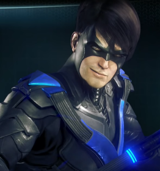

Asa-Noturna
⠀Nome real: Dick Grayson
⠀⠀Altura: 1.82
⠀⠀Peso: 81
⠀⠀Olhos: Azuis
⠀Cabelo: Preto
⠀⠀Parceiros: Batman, Robin
História
Uma jovem familia de acrobatas conhecidos como os Graysons voadores. Dick Grayson viu seus pais morrerem em sua frente pelas mãos de um chefe da máfia que estava estorquindo dinheiro do circo em que eles trabalhavam. Bruce Wayne adotou o orfão e o treinou para combater o crime como seu parceiro, Robin. Determinado para se provar, ele cresceu na sombra do Batman e se mudou para o Bludhaven para combater o crime com um novo nome - Asa-Noturna.